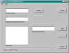

Tymeac Function Maintenance,
com.tymeac.client.jframe.TyFuncMaint
This is the means to add, change and delete Tymeac Functions.
This Class requires
- A Data Base Management System,
- A Function Table set up according to this,
- A List Table set up according to this,
- The Configuration File so that it may find the DBMS names.
 (click to link to full image)
Elements
Function Name -- This is a String. Any unique sequence. However,
please see how to name Functions and the Function name
checking class, FunctionChecker in the sample code.
Output Agent Queue (optional) -- The name of the Output Agent Queue
for this Function, if any. This Queue must exist in the DBMS Queue
Table, as an Output Agent Queue, see Queue Maintenance, TyQueMaint.
Queue Name to Add -- The name of a Queue to add to the list. This
Queue must exist in the DBMS Queue Table as a normal Queue,
not as an Output Agent Queue, see Queue Maintenance, TyQueMaint.
Queue List -- This is a List of the Queue Names associated with this
Function. Tymeac schedules Queues in the order found here. However, as with all
asynchronous processing, execution variables determine dispatching and completion.
Buttons
IMPORT -- The button brings up the FileDialog Menu for the
Configuration File. Once this file is accessed, the current Function is read from the
DBMS and the elements are filled in.
DELETE -- This button deletes the current Function. When there is
no current function, it brings up the FileDialog Menu for the Configuration File, verifies
the existence of the Function, and deletes it.
ADD -- This button adds a Queue to the list.
REMOVE -- This button removes the selected Queue from
the list .
FINISH -- This button updates the DBMS Function and List Tables.
Message Block at bottom : This is an information message.
Function Deleted -- The function was deleted.
Configuration File not found -- The FileDialog chosen file did not exist or was
not in the proper format.
Invalid Function Name for delete | update | import -- The Function does
not exist.
Function Data Base error -- A DBMS error occurred. Check the console for
additional information.
List not found error -- The List of Queue's for this Function could not be
found. This is probable a DBMS error on the List Table. Check the console for
additional information.
List Data Base error -- This is a DBMS error on the List Table. Check the
console for additional information.
Successful -- The requested procedure completed successfully.
List is empty -- The List of Queue's for this Function could not be found. This
is probable a DBMS error on the List Table. Check the console for additional information.
Function could not be added -- This is probable a DBMS error. Check the console
for additional information.
Make changes -- The current Function is available for changes.
Function/List mismatch error -- The List of Queue's for this Function could not
be found. This is probable a DBMS error on the List Table. Check the console for
additional information.
Output Agent Queue invalid -- This Queue does not exist on the DBMS Queue Table.
Selected Queue invalid -- This Queue does not exist on the DBMS Queue Table.
Queue Data Base Error -- This is a DBMS error on the Queue Table. Check the
console for additional information.
Function already exists -- You cannot add an existing function or make changes
to an existing function without first importing it.
| {kind=link}